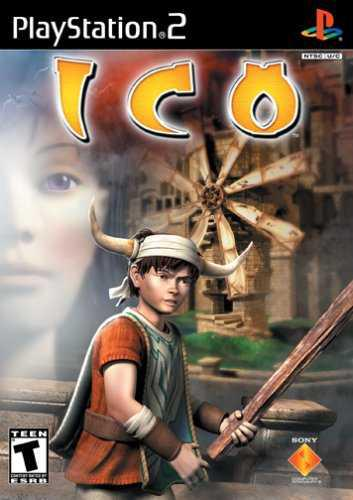
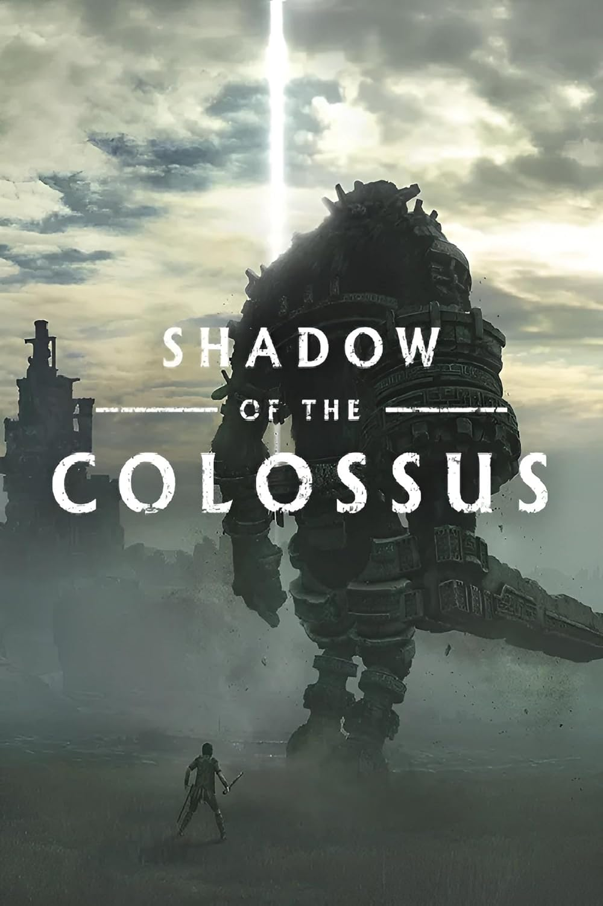
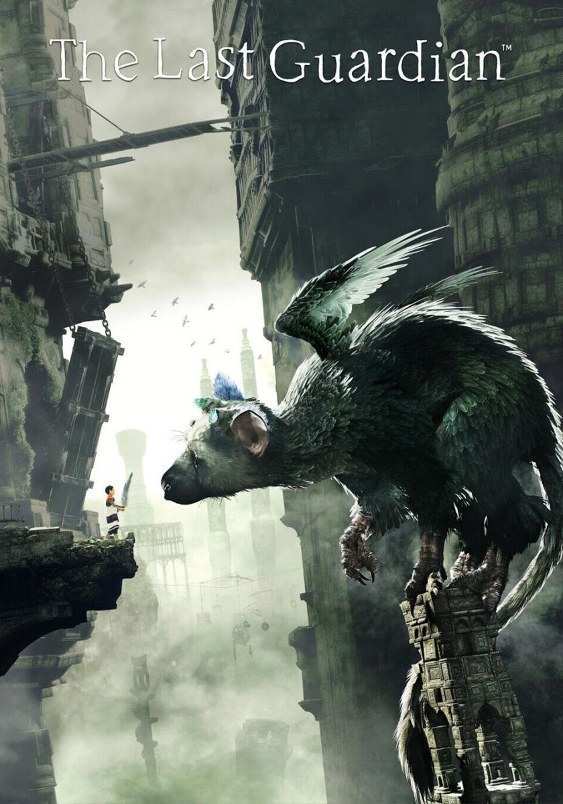

Ico (2001)
es un videojuego de aventura-puzzles para PlayStation 2 publicado a finales del año 2001 por Sony Computer Entertainment. La dirección del proyecto y el desarrollo del mismo corrieron a cargo de Fumito Ueda, quien quería crear un juego de estilo minimalista alrededor del concepto «chico conoce chica». Aunque fue originalmente planeado para la PlayStation, los cuatro años que duró su desarrollo causaron el cambio de plataforma. El equipo empleó un enfoque llamado «diseño sustractivo», que sirvió para ir reduciendo los elementos de juego que podrían interferir con la ambientación y la historia del mismo, y así crear un alto nivel de inmersión.
El protagonista del juego es un joven nacido con cuernos, algo que en su aldea natal se considera un mal presagio. Los guerreros de la aldea encierran a Ico en una fortaleza abandonada. Tras salir de su encierro y explorar un poco la fortaleza, Ico encuentra a Yorda, la hija de la reina del castillo, quien planea usar el cuerpo de Yorda para alargar su propia vida. Ico trata de escapar del castillo con Yorda, para tratar de evitar que su destino se cumpla, manteniéndola a salvo de las criaturas sombrías que intentan llevársela. A lo largo del juego, el jugador controla a Ico mientras explora el castillo, resuelve rompecabezas y ayuda a Yorda a superar obstáculos.

Shadow of the Colossus (2005)
Los relatos hablan de un antiguo reino en el que los Colossi deambulan por magníficos paisajes. Estas criaturas, en estrecha relación con la tierra, tienen la clave para conseguir un poder místico de resurrección, que deberás obtener para devolver la vida a un ser querido.
SHADOW OF THE COLOSSUS te conducirá por un viaje impresionante a través de tierras antiguas para buscar bestias gigantescas. Con tan solo una espada y un arco, deberás explorar las tierras espaciosas y descubrir cada Colossus, que te presentará un desafío exclusivo que pondrá a prueba tu ingenio, determinación y habilidades.

The last guardian (2016)
En una extraña y mística tierra, un niño encuentra una misteriosa criatura con la que entabla un vínculo profundo e indestructible. Esta insólita dupla deberá apoyarse mutuamente para escapar de ruinas traicioneras y sortear peligros desconocidos. Súmate a una experiencia única con esta historia emotiva y conmovedora acerca de la amistad y la confianza.
El Team ICO comenzó a desarrollar The Last Guardian en el año 2007. Fue diseñado y dirigido por Fumito Ueda, y comparte elementos estilísticos, temáticos y de jugabilidad con sus videojuegos anteriores Ico (2001) y Shadow of the Colossus (2005). Empleó el enfoque de "diseño por sustracción" que habían usado en sus videojuegos anteriores, eliminando elementos que no contribuían al tema central de la conexión entre el niño y Trico.
La empresa Sony anunció The Last Guardian en la Electronic Entertainment Expo del año 2009 con un lanzamiento planificado para 2011 exclusivamente para la PlayStation Sufrió numerosas demoras; Ueda y otros miembros del equipo Ico se fueron de Sony, y las dificultades de hardware movieron el videojuego a la PlayStation 4 en el 2012, haciendo especulaciones de que el videojuego no se vería lanzado. Ueda y su estudio genDESIGN, compuesto por antiguos miembros del Team ICO, se mantuvieron como consultores creativos, con Ueda como director y el estudio técnico de Sony Studio de Japón. The Last Guardian se reintrodujo en la E3 2015.Tras su lanzamiento, recibió elogios por su dirección de arte, su historia y representación de Trico, aunque algunos criticaron la jugabilidad.